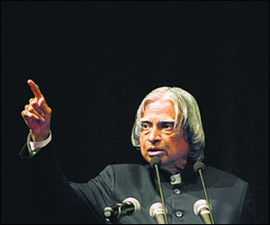

Dr. A. P. J. Abdul Kalam
People's President | Missile Man of India

Dr. A. P. J. Abdul Kalam giving lecture.
A time line of Dr. Avul Pakir Jainulabdeen Abdul Kalam's life:
- 1931 - Born in Rameswaram on Pamban Island, then in the Madras Presidency and now in the State of Tamil Nadu in a poverty-striken family. Young Kalam sold newspapers in order to add to his family's meager income.
- 1954 - Graduated in Physics from Saint Joseph's College, Tiruchirapalli.
- 1955 - Moved to Madras to study Aerospace Engineering in Madras Institute of Technology.
- 1960 - Graduated from the Madras Institute of Technology and joined the Aeronautical Developement Establishment of the Defence Research and Developement Organisation (DRDO) as a scientist after becoming a member of Defence Research and Developement Service (DRDS).
- 1969 - Transferred to the Indian Space Research Organisation (ISRO).
- 1980 - India's first Satellite Launch Vehicle (SLV-III) successfully deployed the Rohini satellite in the near-earth orbit. He was the Project Director of SLV-III.
- 1992 to 1999 - Served as the Chief Advisor to the Prime Minister and Secretary of DRDO.
- 1998 - Developed a low cost coronary stent, named the "Kalam-Raju" Stent", along with cardiologist Soma Raju.
- 2002 to 2007 - Served as the 11th President of India and brought several developemental reforms during this period.
- 2012 - Designed a rugged tablet computer for health care in rural areas along with cardiologist Soma Raju, which was named "Kalam-Raju Tablet". Also, launched a programme for the youth of India called the What Can I Give Movement, with a central theme of defeating corruption.
- 2015 - Died at the age of 83 due to a sudden cardiac arrest while delivering a lecture on "Creating a Livable Planet Earth" at the Indian Institute of Management Shillong.
"Failure will never overtake me if my determination to succeed is strong enough."
-- Dr. A. P. J. Abdul Kalam